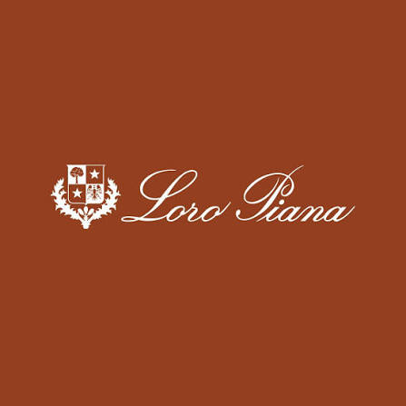
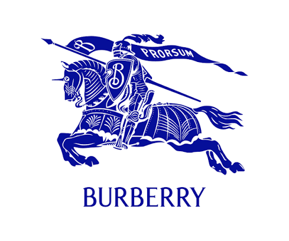

MARCAS DA MODA DE LUXO

A Loro Piana é uma marca italiana de luxo fundada em 1924, reconhecida mundialmente pela excelência em tecidos nobres e pelo conceito de "quiet luxury" — luxo discreto, sem logotipos chamativos. A empresa começou como fabricante de tecidos premium e tornou-se referência em peças de vestuário, acessórios e artigos para casa confeccionados com matérias-primas raras, como cashmere, lã merino extrafina, vicunha e fibra de lótus. Desde 2013, a marca faz parte do grupo LVMH, mantendo seu foco em qualidade, artesanato, inovação têxtil e elegância atemporal.

A Burberry é uma marca britânica de luxo fundada em 1856 por Thomas Burberry. Reconhecida por unir tradição e inovação, a marca ficou famosa pela criação do tecido gabardine, resistente à água, e pelo icônico trench coat, que se tornou um símbolo da moda clássica. Seu característico padrão xadrez (Burberry Check) é um dos elementos mais reconhecidos do universo do luxo. Atualmente, a Burberry oferece coleções de roupas, bolsas, calçados, acessórios e fragrâncias, mantendo uma identidade que combina herança britânica, artesanato de alta qualidade e design contemporâneo. Hoje, a marca continua sendo uma das principais casas de luxo do mundo, com forte presença global e foco em sustentabilidade, inovação e moda premium.
.png)
A Tiffany & Co. é uma joalheria de luxo americana fundada em 1837 por Charles Lewis Tiffany e John B. Young, em Nova York. Reconhecida mundialmente por suas joias de alta qualidade, especialmente anéis de noivado com diamantes, a marca tornou-se um ícone de elegância, sofisticação e excelência em joalheria. Sua identidade é marcada pela famosa Tiffany Blue Box®, embalagem azul-turquesa que simboliza exclusividade e prestígio. Além de joias, a Tiffany & Co. oferece relógios, acessórios, artigos para casa e fragrâncias. Desde 2021, a marca faz parte do grupo LVMH, preservando sua tradição artesanal enquanto investe em inovação, sustentabilidade e fornecimento responsável de metais preciosos e diamantes.
.jpg)
Coco Chanel (1883–1971) foi uma das estilistas mais influentes da história da moda e fundadora da Chanel. Revolucionou a moda feminina ao introduzir um estilo elegante, prático e sofisticado, substituindo roupas rígidas por peças de linhas simples e confortáveis. Entre suas maiores criações estão o tailleur de tweed, o vestido preto básico (Little Black Dress), a bolsa 2.55 e o icônico perfume Chanel Nº 5. Seu legado permanece como símbolo de elegância atemporal, inovação e luxo, influenciando gerações de estilistas e consolidando a Chanel como uma das marcas mais prestigiadas do mundo.
.png)
A Vogue é uma das revistas de moda, beleza e lifestyle mais influentes do mundo. Fundada em 1892, nos Estados Unidos, tornou-se referência global por apresentar tendências, editoriais de moda, entrevistas exclusivas e cobertura dos principais eventos da indústria, como as semanas de moda e o Met Gala. Publicada em diversos países, a Vogue é reconhecida por seu papel na definição de tendências e na valorização da criatividade, do design e do luxo, sendo uma importante plataforma para estilistas, modelos, fotógrafos e marcas de prestígio.